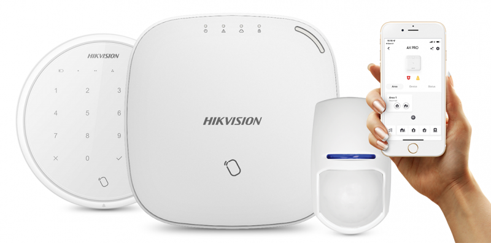
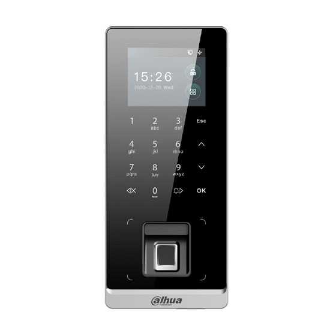
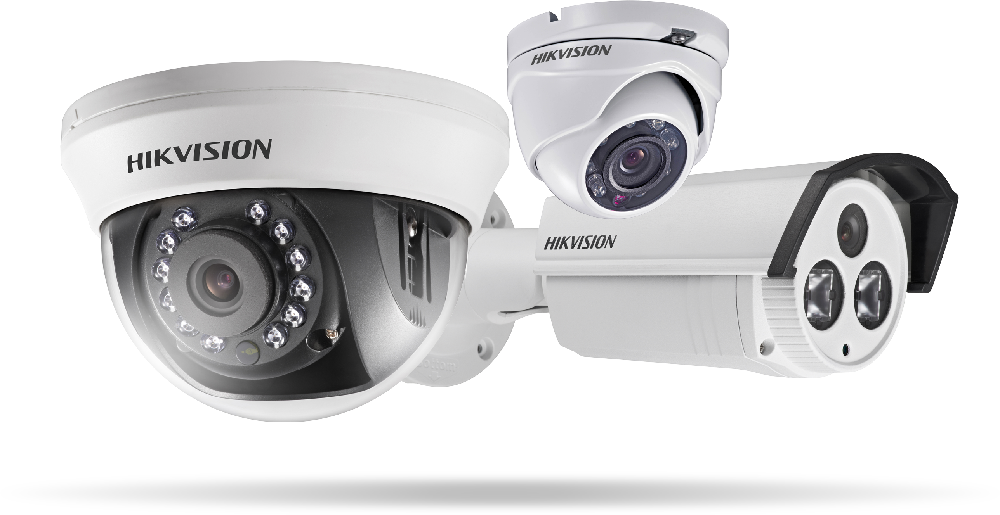
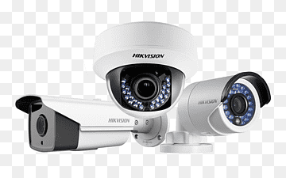
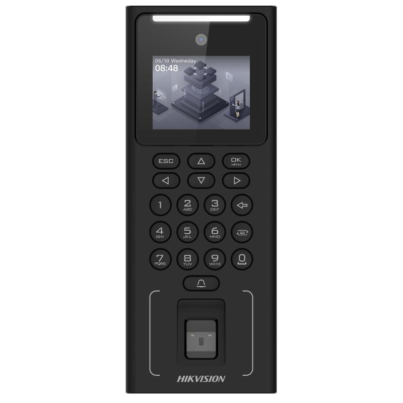
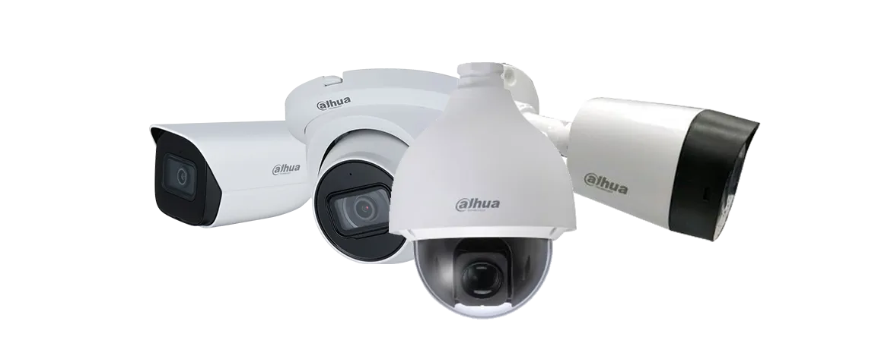
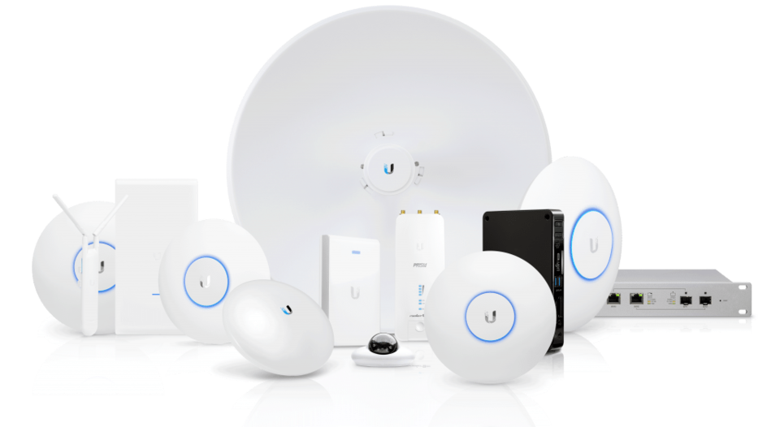

Encarnación · Itapúa · Paraguay
Redes WiFi, CCTV y soporte técnico con criterio para hogares y negocios
Si el WiFi falla, las cámaras no cubren lo importante o nadie tiene claro qué quedó instalado, revisamos el caso y lo dejamos más estable, operable y simple de mantener para hogares, comercios, oficinas y empresas de Encarnación, Itapúa y zonas cercanas.
Cuando la instalación crece sin criterio, cada falla se vuelve más cara
Una red puede tener señal y aun así cortar. Las cámaras pueden grabar sin cubrir accesos ni cajas. También aparecen claves perdidas, equipos sin registro, alarmas mal ubicadas y soporte que empieza de cero cada vez.
Diagnóstico, instalación y mejora para redes, seguridad física y soporte
Jesareko releva, corrige, integra y da soporte sobre instalaciones nuevas o existentes para que el sistema responda mejor al lugar, al uso real y al presupuesto.
Redes y WiFi
Incluye: revisión de cobertura, cableado, puntos de acceso, saturación y red de invitados. Conviene cuando: hay cortes, zonas muertas o demasiados equipos compartiendo mal la conexión. Resultado: una red más estable, con mejor cobertura y más simple de mantener.
- Routers, switches, APs y cableado
- Cobertura, estabilidad y saturación
- Segmentación básica y WiFi para invitados
- Mejoras sobre instalaciones existentes
Seguridad física: cámaras, alarmas, accesos e incendio
Incluye: diagnóstico, instalación e integración de CCTV, alarmas, sensores, acceso remoto, lectores y detección de incendio. Conviene cuando: hay puntos ciegos, ingresos sin control, alertas mal resueltas o equipos que no dialogan entre sí. Resultado: más control, registros útiles y una operación más clara en el día a día.
- Cámaras, DVR/NVR y acceso remoto
- Alarmas, sensores, sirenas y control por app
- Lectores, PIN, tarjetas, biometría y cerraduras
- Detectores, centrales y señalización básica de incendio
- Revisión, mantenimiento y criterios de uso
Soporte e infraestructura
Incluye: revisión de equipos, usuarios, accesos, respaldos básicos e inventario. Conviene cuando: el soporte depende de recordar claves, mensajes viejos o técnicos anteriores. Resultado: incidencias más rápidas de resolver y menos tiempo perdido buscando contexto.
- Equipos, usuarios y permisos
- Inventario técnico
- Accesos y respaldos básicos
- Documentación operativa de entrega
Web, monitoreo y automatización
Incluye: landing pages, formularios, integración con WhatsApp, SEO local, paneles y alertas simples. Conviene cuando: necesitás explicar mejor el servicio o detectar incidentes sin revisar todo manualmente. Resultado: mejor captación de consultas y seguimiento técnico más claro.
- Landing pages, formularios y WhatsApp
- SEO local para búsquedas de la zona
- Monitoreo básico, paneles y alertas
- Automatizaciones puntuales
Soluciones de seguridad
Estas soluciones sirven cuando necesitás detectar eventos, controlar ingresos y revisar qué pasó sin depender de una sola persona.

Alarmas
Para detectar aperturas, movimientos o intrusiones y recibir avisos que permitan actuar con más rapidez en viviendas, comercios y depósitos.

Control de acceso
Para definir quién entra, en qué horario y con qué registro, sin depender solo de llaves físicas o accesos compartidos.

CCTV inteligente
Para cubrir accesos, caja, perímetro o circulación con visualización, grabación y revisión de eventos con acceso remoto cuando hace falta.

Incendio
Para sumar detección, aviso sonoro y mantenimiento básico en espacios que necesitan una primera capa de respuesta ante humo o calor.
Casos donde una mejora puntual cambia la operación
Aplicaciones concretas donde seguridad física y conectividad reducen fallas repetidas o tareas manuales.
No necesitás saber qué equipo comprar: primero revisamos el caso y definimos qué conviene.
Consultar por WhatsAppPrimero relevamos el problema, después proponemos la solución
Podemos trabajar sobre instalaciones existentes. Antes de mover o comprar equipos, revisamos el estado real y priorizamos mejoras según lugar, cobertura, riesgo, compatibilidad y presupuesto.
Revisamos
Lugar, equipos, cobertura, puntos críticos y fallas que se repiten.
Priorizamos
Qué conviene corregir primero según impacto operativo y costo.
Instalamos/configuramos
Instalamos o ajustamos con pruebas básicas de funcionamiento y acceso.
Documentamos
Equipos, accesos, ubicaciones y recomendaciones para próximos cambios.
Acompañamos
Ajustes y soporte después de la entrega.
Mejoramos
Próximas etapas sin rehacer todo si el negocio o el espacio crecen.
Para quién y en qué casos conviene
Intervenimos cuando ya existe una instalación que necesita mejoras, cuando el soporte se volvió confuso o cuando un espacio nuevo debe quedar listo para operar desde el inicio.
Hogares y residencias
Necesidad: WiFi que llegue bien a habitaciones, patio o quincho, cámaras con acceso remoto y alertas básicas.
Resultado: más cobertura, mejor control desde el celular y menos ajustes repetidos.
Comercios y locales
Necesidad: conectividad estable para caja, POS y clientes, más CCTV, alarmas o acceso en horarios sensibles.
Resultado: menos interrupciones en atención y mejor registro de lo que pasa en el local.
Pymes y oficinas
Necesidad: red interna, usuarios, accesos, respaldos básicos y soporte con contexto para varias personas o áreas.
Resultado: menos dependencia de una sola persona y resolución más rápida de fallas.
Empresas e instituciones
Necesidad: cableado, CCTV, alarmas, accesos, incendio, monitoreo y coordinación con otros proveedores.
Resultado: una base más clara para operar, mantener y seguir ampliando.
Criterio técnico y tipos de soluciones habituales
Primero se releva el lugar y después se recomienda la solución. La elección depende de cobertura, riesgo, compatibilidad, presupuesto, mantenimiento y facilidad de uso, no de comprar equipos por marca o por moda.
Redes e infraestructura
CCTV y videovigilancia
Alarmas
Control de acceso
Incendio
Monitoreo y soporte
Web y automatización
Equipos de ejemplo
Antes de recomendar equipos revisamos cobertura, puntos críticos, riesgo, compatibilidad, presupuesto y mantenimiento. Estas imágenes muestran tipos de soluciones habituales que pueden combinarse o mejorarse por etapas según el entorno.
Cámaras CCTV
Ejemplo de cámaras para cubrir accesos, perímetro o circulación en hogares, comercios y empresas.

Cámara tipo bullet/turbo
Ejemplo de cámara pensada para puntos fijos con grabación y revisión posterior.
Sistema de alarma
Ejemplo de alarma para aperturas, movimiento y avisos remotos en viviendas o locales.
Control de acceso
Ejemplo de equipo para registrar ingresos y aplicar permisos por usuario u horario.

Terminal biométrico
Ejemplo de control por huella o PIN para puertas, oficinas y áreas restringidas.

Videovigilancia remota
Ejemplo de solución para revisar eventos y supervisar puntos sensibles sin depender de recorridos constantes.

Cámara WiFi
Ejemplo de cámara WiFi para espacios puntuales donde conviene una instalación más simple y gradual.

Cámara móvil/PT
Ejemplo de cámara para hogares, quinchos o tiendas que necesitan seguimiento visual en áreas puntuales.
Sistema de incendio
Ejemplo de base para detección, aviso sonoro y señalización ante humo o calor.

Redes WiFi
Ejemplo de equipos para mejorar cobertura, estabilidad y soporte de otros sistemas conectados.
Las imágenes se usan para ilustrar tipos de soluciones. La recomendación final depende del diagnóstico, la compatibilidad, el presupuesto, la facilidad de uso y el mantenimiento esperado.
Resultados que se notan en la operación diaria
El valor está en resolver mejor, comprar con más criterio y dejar una base clara para mantener o ampliar la instalación.
Menos compras a ciegas
Revisamos antes de recomendar equipos para ajustar la inversión al problema real.
Menos fallas repetidas
Buscamos causas, no solo parches, especialmente en WiFi, cámaras y equipos críticos.
Instalaciones más claras
Dejamos ubicaciones, accesos y criterios básicos en un formato fácil de consultar.
Soporte más rápido porque hay contexto
Con información previa, cada ajuste o incidente arranca mejor ubicado.
El primer paso es una revisión técnica para entender qué conviene mejorar y qué no hace falta tocar.
Pedir diagnóstico técnicoPedí una revisión técnica
Contanos por WhatsApp qué está fallando, qué querés instalar o qué área necesitás mejorar. Con esa primera información podemos orientar el siguiente paso y pedir solo los datos técnicos necesarios.
WhatsApp es el canal principal para coordinar diagnóstico, visita o soporte.
Atendemos Encarnación, Cambyretá, Capitán Miranda, Hohenau, Obligado y otras zonas cercanas de Itapúa.
También podés enviar el mismo detalle por correo si necesitás dejar registro formal.
Si no tenés claro por dónde empezar, empecemos por el diagnóstico
La revisión técnica permite detectar qué conviene corregir, qué puede aprovecharse y cómo dejar la instalación más clara para el uso diario.